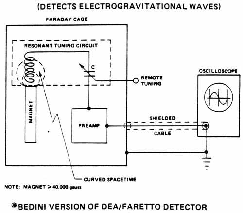

|
|
ORDER THE ALL NEW Stunning new revelations THIS BOOK IS THE |
Fer de Lance
|
SCALAR WAVE DETECTOR SLIDE 33.  On this slide we show a concept for a detector for scalar EG waves. This is the Bedini scalar wave detector, adapted from an original concept by Dea and Faretto.The idea is quite simple: install a very powerful bar magnet vertically inside a grounded Faraday cage. Then install an open-ended coil longitudinally above the magnet so that a line through the longitudinal axis of the magnet passes through the longitudinal axis of the coil above it. The open end of the coil does not touch the magnet. Connect the other end of the coil to a variable tuning capacitor, so that the coil and capacitor form a tunable, series-LC-oscillatory circuit. The output of the capacitor is connected to a transistorized preamplifier inside the cage. A tuning shaft for the capacitor is very carefully passed through a small hole in the shield to allow tuning from outside. The output of the preamp passes very carefully through a small hole in the shield, through a shielded cable, to an adjacent oscilloscope. The cable shield is also grounded to reference ground potential. The theory is as follows: Suppose a normal EM wave appears inside the cage, above the magnet or closely adjacent thereto. In that case a coupled oscillation appears in the field of the magnet, and this oscillation is coupled to the coil immediately above it. If the oscillation is within the bandwidth of the tuned series LC circuit, detection occurs. This is amplified by the preamp and passed to the oscilloscope, where it is displayed on the scope. Note that the detector detects normal EM wave. Now our problem is: how doe we get an EG wave to be detected? And how do we assure that we do not detect ordinary EM waves from outside? Actually this is simple. Ordinary waves (except for quite low frequency) will be grounded out by the Faraday shield, and will not penetrate the cage. Thus these normal EM waves cannot enter the cage and appear above the magnet. They will not be detected. Scalar EG waves, on the other hand, will enter the cage since they do not couple to conduction electrons in the metal of the cage. Above the pole of the magnet, spacetime is locally bent. After all, a pole is a magnetostatic scalar potential, which is a part of the conglomerate called "G-potential." The pole represents an increase (or decrease, depending upon whether it is a north or a south pole) in the magnetostatic component of the local G-potential. This is a curvature of spacetime. An EG wave entering this region adds a varying component of magnetostatic G-potential, which bleeds-off in the coil as an ordinary EM wave. Another way to view the detector is to model the EG wave as a longitudinal wave, and an ordinary EM wave as a transverse wave. When the EG wave enters the curved spacetime region above the magnet, to the coil (the "observer" in this case!) the longitudinal aspect of the EG wave appears to be rotating back and forth, so that an oscillating transverse component is present. This transverse component appears to the coil as an ordinary EM field, and so the LC circuit detects it if it is in the proper frequency band. Yet another way to view the situation is to realize that an EG wave entering the magnet results in an oscillation component added to the magnetostatic scalar potential (pole strength) of the magnet. According1y, the magnet is a receiver for scalar waves, which are detected to "bleed-off" as an oscillation of the magnetic field strength of the magnet. Coupling of this oscillating magnetic field to the coil creates an oscillating current flow into the capacitor This oscillates the voltage input to the preamp, which amplifies and feeds the signal to the oscilloscope for display. In fact I rather like the latter view! It is important to remember that a magnetostatic potential and an electrostatic potential can be oscillated by a scalar EG wave. By placing a magnetic material inside a Faraday cage, the oscillation of the magnetostatic scalar potential (pole strength of the magnet) can be used as the EG detecting mechanism. By placing a chargeable material inside a Faraday cage, the oscillation of the electrostatic scalar potential can be detected. (Possible examples of the latter type detectors are given by Hodowanec, Radio Electronics, April 1986.) Note also that one may detect waves at one reference level and not at another. Changing the bias on the zero-reference ground of the Bedini detector affects the detection. To look inside a normal EM carrier (such as the Woodpecker) and see what scalar signals are riding upon it, the carrier may be used to bias the reference ground of the Bedini detector. To produce a spectrum analyzer, simply use additional series resonant LC tuning circuits in parallel (put multiple taps on the coil, and wire each tap to a separate tuning capacitor of different capacitance). Again, varying the zero reference level is important, as is varying the strength of the magnet. Golden also has invented an excellent series of scalar wave detectors based upon quite different proprietary principles. The bottom line is: we can indeed rigorously detect and measure scalar EG waves. When one considers the large sums of money presently being spent to bury large aluminum cylinders etc. in an attempt to detect gravitational waves, one wonders why some funds could not be released to a few unorthodox researchers by the National Academy of Sciences to fund the proven creation and detection of electrogravitational waves! Note from Webmaster: I understand that it took Bedini about 600 attempts before he got the device to work. It was then handed over to a different party to produce it, who then made some "improvements", and the device then failed to work.
Previous Slide Return to Homepage |